Self-learning figures (draft for critique)
Run ace_runs/deep1. NAFEMS LE11 axisymmetric first, then Cook's membrane. Only correctly set-up runs are shown, so every difference is the mesh. NAFEMS LE11 3D (run ace_runs/le11) is not shown: its correctly set-up agents kept resubmitting the same few meshes from generation 0 to 18, so there is no clear early-vs-trained difference to draw. Regenerate with make_figures.py; every number comes from the run files (see captions and data/).
NAFEMS LE11 (axisymmetric)
NAFEMS LE11 (axisymmetric): four solutions on one colour scale
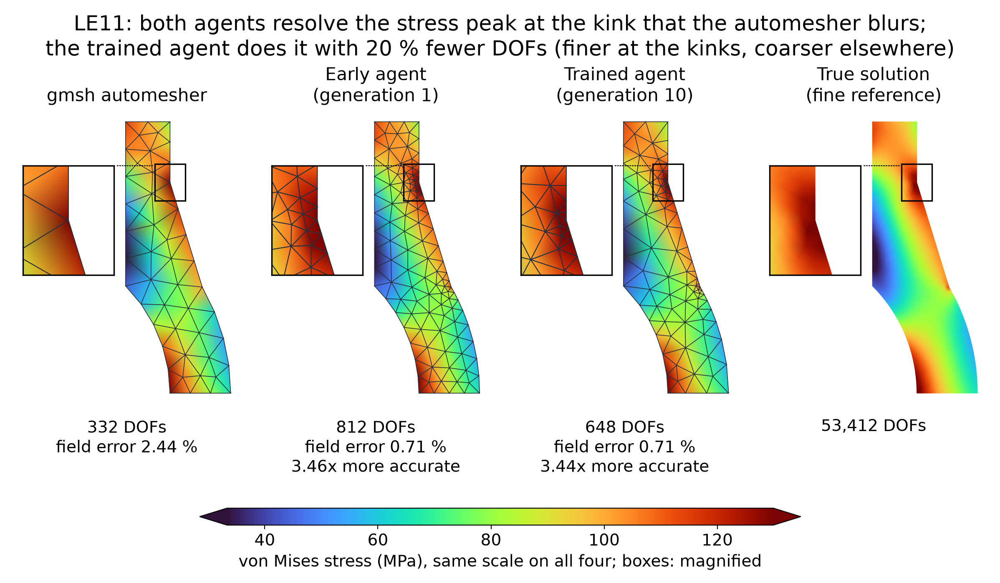
fig_L0_combined.png / .pdfLeft to right: gmsh automesher (332 DOFs, field error 2.44 %); best generation-1 agent g1-nafems_le11_axisym-a3 (812 DOFs, 0.71 %, 3.46x the automesher's accuracy); best generation-10 agent g10-nafems_le11_axisym-a4 (648 DOFs, 0.71 %, 3.44x the automesher's accuracy); true solution. NAFEMS LE11 axisymmetric (hollow cylinder / taper / sphere, steel, E = 210 GPa, nu = 0.3, alpha = 2.3e-4 /degC, temperature T = r + z, i.e. x + y in the section; no mechanical load; stresses in MPa), run ace_runs/deep1. Field error = relative energy-norm error of the whole stress field vs the fine reference (ace/field_refs/nafems_le11_axisym.npz, 53,412 DOFs; a coarser reference solve differs from it by 0.16 %, so the reference's own error is below that). Each mesh was rebuilt from its request and re-solved with the fixed skfem solver as the scorer does; the re-solved field errors and DOFs match the stored ones (data/nafems_le11_axisym/panels.json). Excluded: g0-nafems_le11_axisym-a0, g0-nafems_le11_axisym-a4, g0-nafems_le11_axisym-a5, g0-nafems_le11_axisym-a7 (generation 0), because they applied the temperature sqrt(x**2+y**2)+y instead of the problem's x + y, a setup mistake rather than meshing (field error 26.78 %-26.80 %). Colours: von Mises at the element corner nodes (quadratic elements drawn by their corners, midside values not drawn, as the dashboard does), interpolated linearly across each element, Turbo scale clipped to the 1st-99th percentile of the reference (as in the agent dashboard), identical on every panel. Sources: ace/field_refs/nafems_le11_axisym_auto.json, ace_runs/deep1/gen1/runs/g1-nafems_le11_axisym-a3.json, ace_runs/deep1/gen10/runs/g10-nafems_le11_axisym-a4.json.
Caveats: the generation-1 panel is the BEST of the 4 correctly set-up generation-1 runs (by score), not the median; their field errors were 0.71 %-1.09 %. The trained agent uses 2.0x the automesher's DOFs (still tiny); the score charges for that (efficiency term).
Zoom: each panel's box magnifies the kink G = (1.0, 1.39) where the taper meets the upper cylinder (x 0.9-1.1, y 1.27-1.51; black box on the part). Same colour scale. The automesher's few large elements there blur the peak. The early agent asked for size 0.03 at G on a background of 0.13; the trained agent for 0.016 at G (and 0.021 at the lower kink D, vs 0.04) on a coarser background of 0.2, plus 3 moderate refinements elsewhere (sizes 0.05-0.1). Both resolve the peak like the true solution; the solved fields of panels 2 and 3 look alike (field error 0.71 % vs 0.71 %). What changed is the mesh: smaller elements at the kinks, a coarser background, 648 instead of 812 DOFs (the error maps show where the error moved). Requests: data/nafems_le11_axisym/panels.json.
NAFEMS LE11 (axisymmetric), panel 1: gmsh automesher
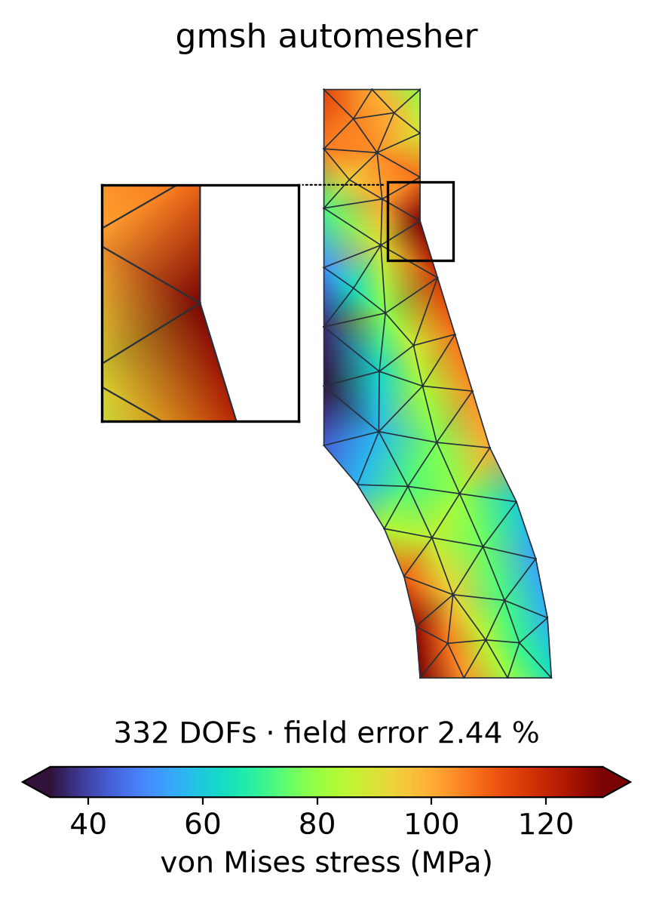
fig_L1_auto.png / .pdfgmsh with default sizes, quadratic triangles, the problem's correct setup (ace/field_error.py automesher). 332 DOFs, 69 elements, field error 2.44 % (stored: ace/field_refs/nafems_le11_axisym_auto.json, 2.44 %). NAFEMS LE11 axisymmetric (hollow cylinder / taper / sphere, steel, E = 210 GPa, nu = 0.3, alpha = 2.3e-4 /degC, temperature T = r + z, i.e. x + y in the section; no mechanical load; stresses in MPa), run ace_runs/deep1. Field error = relative energy-norm error of the whole stress field vs the fine reference (ace/field_refs/nafems_le11_axisym.npz, 53,412 DOFs; a coarser reference solve differs from it by 0.16 %, so the reference's own error is below that). Each mesh was rebuilt from its request and re-solved with the fixed skfem solver as the scorer does; the re-solved field errors and DOFs match the stored ones (data/nafems_le11_axisym/panels.json). Excluded: g0-nafems_le11_axisym-a0, g0-nafems_le11_axisym-a4, g0-nafems_le11_axisym-a5, g0-nafems_le11_axisym-a7 (generation 0), because they applied the temperature sqrt(x**2+y**2)+y instead of the problem's x + y, a setup mistake rather than meshing (field error 26.78 %-26.80 %). Colours: von Mises at the element corner nodes (quadratic elements drawn by their corners, midside values not drawn, as the dashboard does), interpolated linearly across each element, Turbo scale clipped to the 1st-99th percentile of the reference (as in the agent dashboard), identical on every panel.
NAFEMS LE11 (axisymmetric), panel 2: early agent (generation 1)
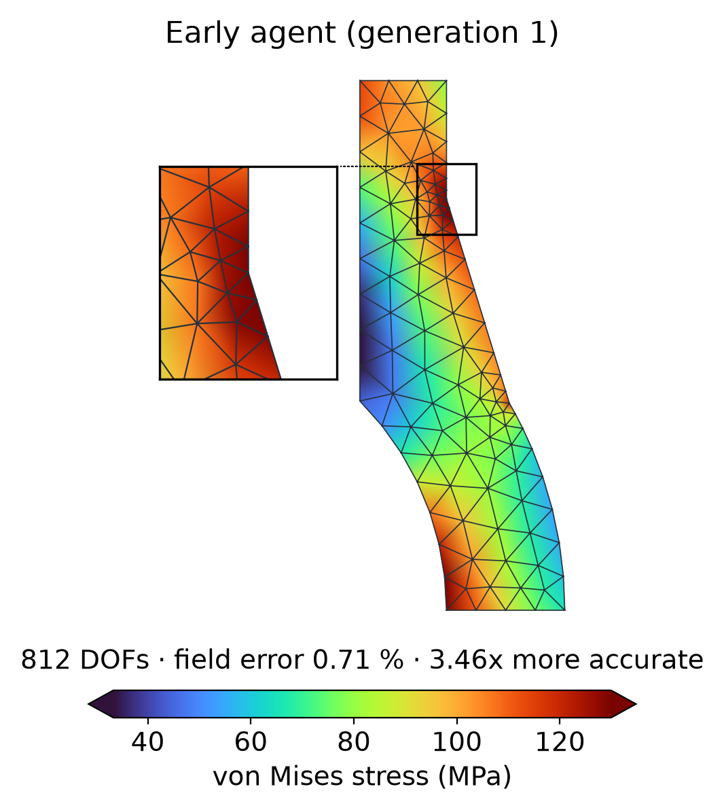
fig_L2_early.png / .pdfg1-nafems_le11_axisym-a3 (ace_runs/deep1/gen1/runs/g1-nafems_le11_axisym-a3.json): best of the 4 correctly set-up generation-1 runs by score (base score 0.706 = 2.83x the automesher), the early agent. 812 DOFs, 179 elements, field error 0.71 %, 3.46x the automesher's accuracy. Mesh request: {"h": 0.13, "order": 2, "refinements": [{"point": [1.0, 1.39], "size": 0.03, "radius": 0.25}, {"point": [1.2124, 0.7], "size": 0.04, "radius": 0.25}]}. NAFEMS LE11 axisymmetric (hollow cylinder / taper / sphere, steel, E = 210 GPa, nu = 0.3, alpha = 2.3e-4 /degC, temperature T = r + z, i.e. x + y in the section; no mechanical load; stresses in MPa), run ace_runs/deep1. Field error = relative energy-norm error of the whole stress field vs the fine reference (ace/field_refs/nafems_le11_axisym.npz, 53,412 DOFs; a coarser reference solve differs from it by 0.16 %, so the reference's own error is below that). Each mesh was rebuilt from its request and re-solved with the fixed skfem solver as the scorer does; the re-solved field errors and DOFs match the stored ones (data/nafems_le11_axisym/panels.json). Excluded: g0-nafems_le11_axisym-a0, g0-nafems_le11_axisym-a4, g0-nafems_le11_axisym-a5, g0-nafems_le11_axisym-a7 (generation 0), because they applied the temperature sqrt(x**2+y**2)+y instead of the problem's x + y, a setup mistake rather than meshing (field error 26.78 %-26.80 %). Colours: von Mises at the element corner nodes (quadratic elements drawn by their corners, midside values not drawn, as the dashboard does), interpolated linearly across each element, Turbo scale clipped to the 1st-99th percentile of the reference (as in the agent dashboard), identical on every panel.
NAFEMS LE11 (axisymmetric), panel 3: trained agent (generation 10)
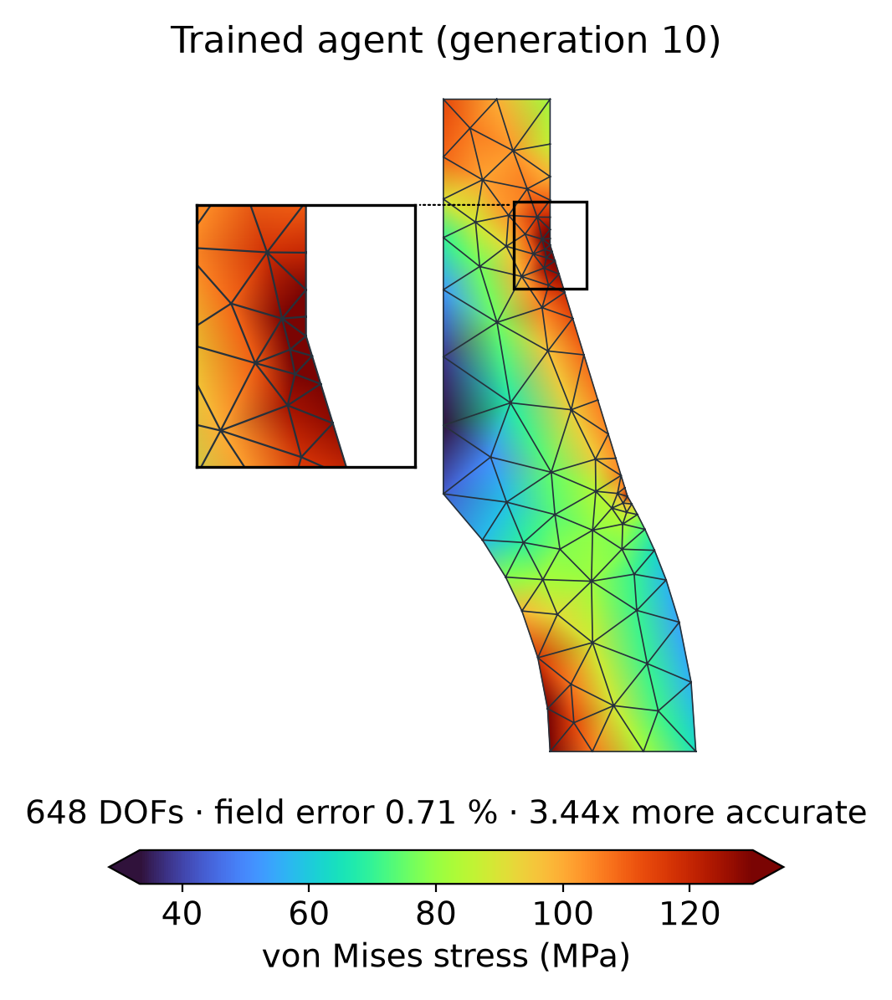
fig_L3_final.png / .pdfg10-nafems_le11_axisym-a4 (ace_runs/deep1/gen10/runs/g10-nafems_le11_axisym-a4.json): best run of the last generation by score (base score 0.880 = 3.52x the automesher; best of the whole run: g10-nafems_le11_axisym-a4). 648 DOFs, 139 elements, field error 0.71 %, 3.44x the automesher's accuracy. Mesh request: {"h": 0.2, "order": 2, "refinements": [{"point": [1.0, 1.39], "size": 0.016, "radius": 0.22}, {"point": [1.2124, 0.7], "size": 0.021, "radius": 0.21}, {"point": [0.97, 0.49], "size": 0.05, "radius": 0.24}, {"point": [0.75, 1.5], "size": 0.085, "radius": 0.25}, {"point": [1.02, 0.08], "size": 0.1, "radius": 0.15}]}. NAFEMS LE11 axisymmetric (hollow cylinder / taper / sphere, steel, E = 210 GPa, nu = 0.3, alpha = 2.3e-4 /degC, temperature T = r + z, i.e. x + y in the section; no mechanical load; stresses in MPa), run ace_runs/deep1. Field error = relative energy-norm error of the whole stress field vs the fine reference (ace/field_refs/nafems_le11_axisym.npz, 53,412 DOFs; a coarser reference solve differs from it by 0.16 %, so the reference's own error is below that). Each mesh was rebuilt from its request and re-solved with the fixed skfem solver as the scorer does; the re-solved field errors and DOFs match the stored ones (data/nafems_le11_axisym/panels.json). Excluded: g0-nafems_le11_axisym-a0, g0-nafems_le11_axisym-a4, g0-nafems_le11_axisym-a5, g0-nafems_le11_axisym-a7 (generation 0), because they applied the temperature sqrt(x**2+y**2)+y instead of the problem's x + y, a setup mistake rather than meshing (field error 26.78 %-26.80 %). Colours: von Mises at the element corner nodes (quadratic elements drawn by their corners, midside values not drawn, as the dashboard does), interpolated linearly across each element, Turbo scale clipped to the 1st-99th percentile of the reference (as in the agent dashboard), identical on every panel.
NAFEMS LE11 (axisymmetric), panel 4: the true solution
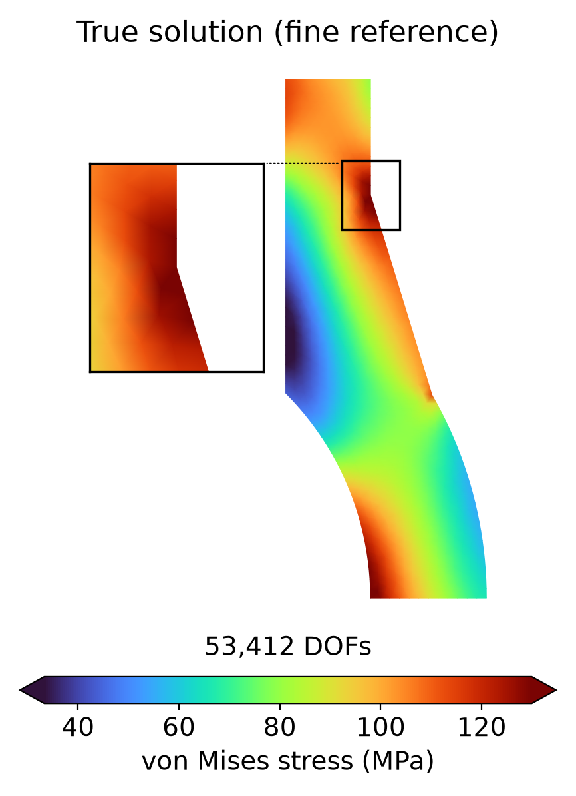
fig_L4_ref.png / .pdfThe fine reference solve (ace/field_refs/nafems_le11_axisym.npz, 53,412 DOFs) drawn on the dashboard's target tessellation (ace/field_refs/nafems_le11_axisym_target.msh, inverse-distance mean of the 4 nearest reference points, as ace/agent_dashboard.py target_structure). No mesh edges: this is the truth, not a mesh anyone submitted. Same Turbo scale as panels 1-3. NAFEMS LE11 axisymmetric (hollow cylinder / taper / sphere, steel, E = 210 GPa, nu = 0.3, alpha = 2.3e-4 /degC, temperature T = r + z, i.e. x + y in the section; no mechanical load; stresses in MPa), run ace_runs/deep1. Field error = relative energy-norm error of the whole stress field vs the fine reference (ace/field_refs/nafems_le11_axisym.npz, 53,412 DOFs; a coarser reference solve differs from it by 0.16 %, so the reference's own error is below that). Each mesh was rebuilt from its request and re-solved with the fixed skfem solver as the scorer does; the re-solved field errors and DOFs match the stored ones (data/nafems_le11_axisym/panels.json). Excluded: g0-nafems_le11_axisym-a0, g0-nafems_le11_axisym-a4, g0-nafems_le11_axisym-a5, g0-nafems_le11_axisym-a7 (generation 0), because they applied the temperature sqrt(x**2+y**2)+y instead of the problem's x + y, a setup mistake rather than meshing (field error 26.78 %-26.80 %).
NAFEMS LE11 (axisymmetric): error maps
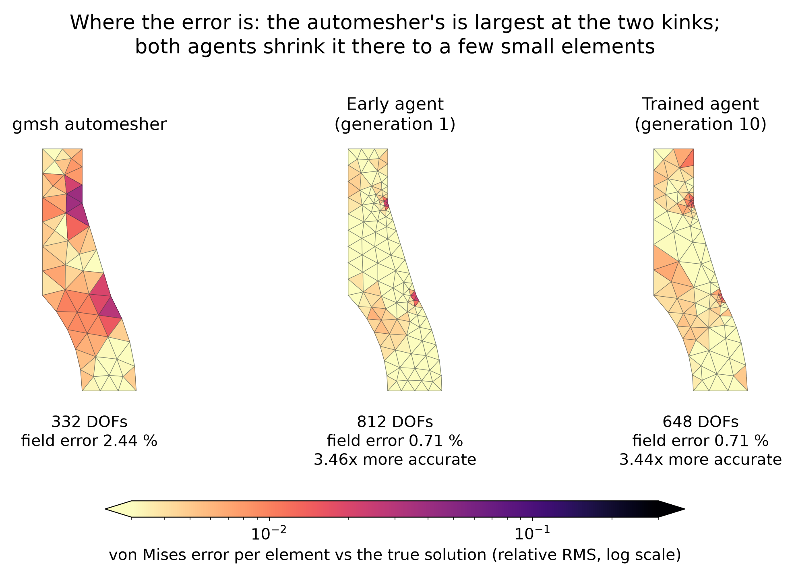
fig_L5_error_maps.png / .pdfPer element: RMS over the reference integration points inside it (9981 points in all) of the relative von Mises error |vm - vm_ref| / max(vm_ref, 0.2 median(vm_ref)) (the run report's pointwise error, ace/run_report.py _field). Log colour scale clipped to 0.003-0.3, identical on the three panels; mesh edges overlaid. Same meshes and numbers as the combined figure. The automesher's error is largest at the two kinks G and D; both agents shrink it there to a few small elements. The trained agent's larger background elements leave somewhat more error away from the kinks than the early agent's, with 648 instead of 812 DOFs and the same field error (0.71 % vs 0.71 %). NAFEMS LE11 axisymmetric (hollow cylinder / taper / sphere, steel, E = 210 GPa, nu = 0.3, alpha = 2.3e-4 /degC, temperature T = r + z, i.e. x + y in the section; no mechanical load; stresses in MPa), run ace_runs/deep1. Field error = relative energy-norm error of the whole stress field vs the fine reference (ace/field_refs/nafems_le11_axisym.npz, 53,412 DOFs; a coarser reference solve differs from it by 0.16 %, so the reference's own error is below that). Each mesh was rebuilt from its request and re-solved with the fixed skfem solver as the scorer does; the re-solved field errors and DOFs match the stored ones (data/nafems_le11_axisym/panels.json). Excluded: g0-nafems_le11_axisym-a0, g0-nafems_le11_axisym-a4, g0-nafems_le11_axisym-a5, g0-nafems_le11_axisym-a7 (generation 0), because they applied the temperature sqrt(x**2+y**2)+y instead of the problem's x + y, a setup mistake rather than meshing (field error 26.78 %-26.80 %).
NAFEMS LE11 axisymmetric: score vs generations trained
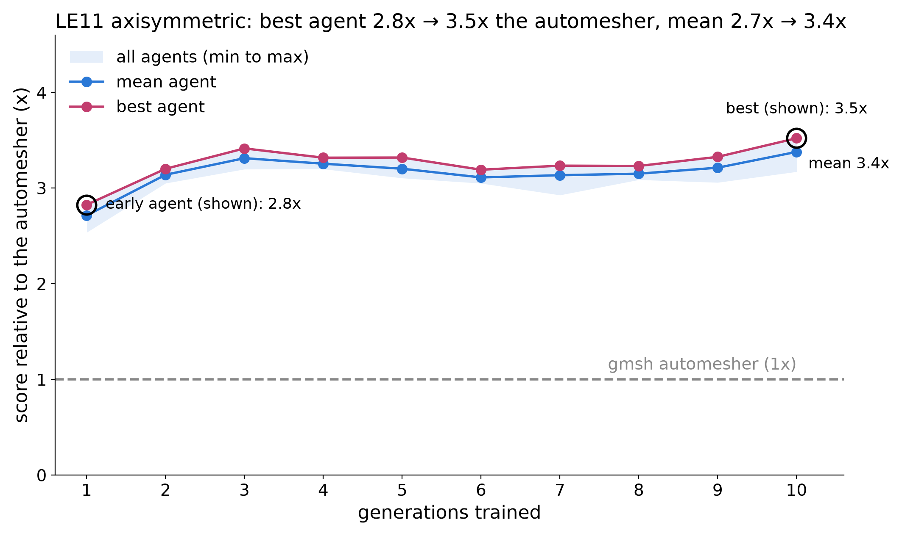
fig_L6_score_vs_generation.png / .pdfMetric: the scorer's base score (accuracy x efficiency, no bonuses; checks.base_score in ace_runs/deep1/gen*/runs/*nafems_le11_axisym*.json) divided by the automesher's own score 0.25, so 1x = the automesher (dashed). Best agent per generation (pink), mean of the agents per generation (blue), min-max band. Only correctly set-up runs are used (40 of 44): a run counts when its recorded setup, re-solved on its own mesh, gives the same field error (to 1e-6) as the problem's own setup (ace/checks.py reference_setup), so the differences shown are the mesh alone (data/runs_deep1.csv, column setup_ok). Excluded: g0-nafems_le11_axisym-a0, g0-nafems_le11_axisym-a4, g0-nafems_le11_axisym-a5, g0-nafems_le11_axisym-a7 (generation 0), because they applied the temperature sqrt(x**2+y**2)+y instead of the problem's x + y, a setup mistake rather than meshing (field error 26.78 %-26.80 %). Generation 0 therefore has no correctly set-up run and is left out. Generation 1: best 2.83x, mean 2.71x (4 runs); generation 10: best 3.52x, mean 3.38x. Circled: the two runs drawn in the panels (g1-nafems_le11_axisym-a3, g10-nafems_le11_axisym-a4). From generation 1 to 10 the mean field error went from 0.82 % to 0.71 % and the mean DOFs from 748 to 674: a little more accurate with fewer DOFs. Every generation-10 run asks for smaller elements at the two kinks and a coarser background than every generation-1 run, plus a few moderate refinements elsewhere (requests: data/runs_deep1.csv -> run files; circled runs: data/nafems_le11_axisym/panels.json). Values: data/per_generation_nafems_le11_axisym.csv.
Caveats: one training run (no repeats); 4 runs per generation; agents are reassigned between the two problems each generation.
Cook's membrane
Cook's membrane: four solutions on one colour scale
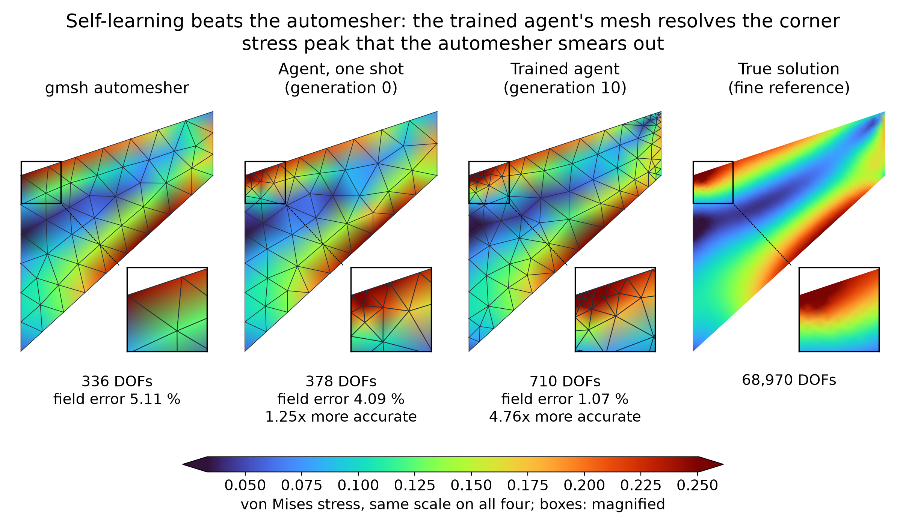
fig_A0_combined.png / .pdfLeft to right: gmsh automesher (336 DOFs, field error 5.11 %); best generation-0 agent g0-cooks_membrane-a3 (378 DOFs, 4.09 %, 1.25x the automesher's accuracy); best generation-10 agent g10-cooks_membrane-a7 (710 DOFs, 1.07 %, 4.76x the automesher's accuracy); true solution. Cook's membrane (plane stress, E = 1, nu = 1/3, unit total shear load; dimensionless stress), run ace_runs/deep1. Field error = relative energy-norm error of the whole stress field vs the fine reference (ace/field_refs/cooks_membrane.npz, 68,970 DOFs; a coarser reference solve differs from it by 0.39 %, so the reference's own error is below that). Each mesh was rebuilt from its request and re-solved with the fixed skfem solver as the scorer does; the re-solved field errors and DOFs match the stored ones (data/panels.json). No run was excluded: every Cook's membrane run's setup gives the same solution as the problem's own setup. Colours: von Mises at the element corner nodes (quadratic elements drawn by their corners, midside values not drawn, as the dashboard does), interpolated linearly across each element, Turbo scale clipped to the 1st-99th percentile of the reference (as in the agent dashboard), identical on every panel. Sources: ace/field_refs/cooks_membrane_auto.json, ace_runs/deep1/gen0/runs/g0-cooks_membrane-a3.json, ace_runs/deep1/gen10/runs/g10-cooks_membrane-a7.json.
Caveats: the generation-0 panel is the BEST of the 4 correctly set-up generation-0 runs (by score), not the median; their field errors were 4.09 %-5.38 %. The trained agent uses 2.1x the automesher's DOFs (still tiny); the score charges for that (efficiency term).
Zoom: each panel's box magnifies the clamped top-left corner (0, 44), where the stress peaks (x 0-10, y 37-47.5; black box on the part). Same colour scale. The automesher's few large elements there smear the peak out; the one-shot agent asked for size 2 at that corner and gets part of it; the trained agent asked for size 0.55 there (and at the loaded top-right corner) and matches the true solution. Requests: data/panels.json.
Cook's membrane, panel 1: gmsh automesher
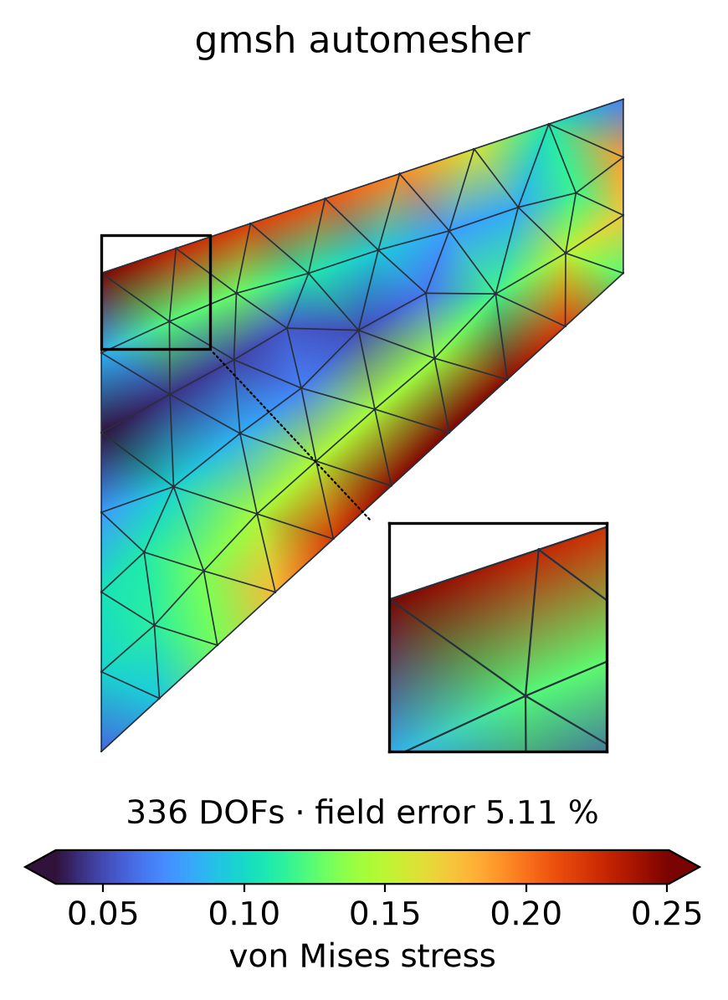
fig_A1_auto.png / .pdfgmsh with default sizes, quadratic triangles, the problem's correct setup (ace/field_error.py automesher). 336 DOFs, 71 elements, field error 5.11 % (stored: ace/field_refs/cooks_membrane_auto.json, 5.11 %). Cook's membrane (plane stress, E = 1, nu = 1/3, unit total shear load; dimensionless stress), run ace_runs/deep1. Field error = relative energy-norm error of the whole stress field vs the fine reference (ace/field_refs/cooks_membrane.npz, 68,970 DOFs; a coarser reference solve differs from it by 0.39 %, so the reference's own error is below that). Each mesh was rebuilt from its request and re-solved with the fixed skfem solver as the scorer does; the re-solved field errors and DOFs match the stored ones (data/panels.json). No run was excluded: every Cook's membrane run's setup gives the same solution as the problem's own setup. Colours: von Mises at the element corner nodes (quadratic elements drawn by their corners, midside values not drawn, as the dashboard does), interpolated linearly across each element, Turbo scale clipped to the 1st-99th percentile of the reference (as in the agent dashboard), identical on every panel.
Cook's membrane, panel 2: agent, one shot (generation 0)
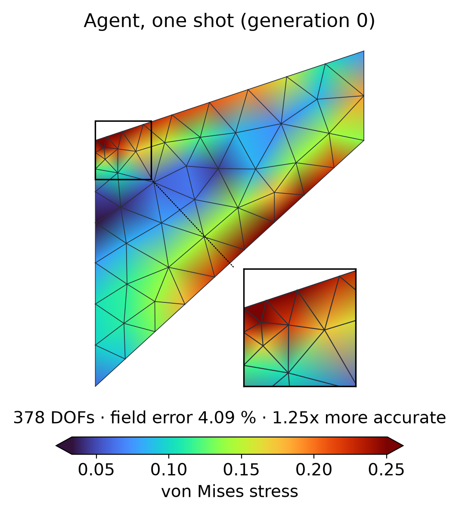
fig_A2_gen0.png / .pdfg0-cooks_membrane-a3 (ace_runs/deep1/gen0/runs/g0-cooks_membrane-a3.json): best of the 4 correctly set-up generation-0 runs by score (base score 0.347 = 1.39x the automesher), the one-shot agent. 378 DOFs, 80 elements, field error 4.09 %, 1.25x the automesher's accuracy. Mesh request: {"h": 8, "order": 2, "refinements": [{"point": [0, 44], "size": 2, "radius": 8}]}. Cook's membrane (plane stress, E = 1, nu = 1/3, unit total shear load; dimensionless stress), run ace_runs/deep1. Field error = relative energy-norm error of the whole stress field vs the fine reference (ace/field_refs/cooks_membrane.npz, 68,970 DOFs; a coarser reference solve differs from it by 0.39 %, so the reference's own error is below that). Each mesh was rebuilt from its request and re-solved with the fixed skfem solver as the scorer does; the re-solved field errors and DOFs match the stored ones (data/panels.json). No run was excluded: every Cook's membrane run's setup gives the same solution as the problem's own setup. Colours: von Mises at the element corner nodes (quadratic elements drawn by their corners, midside values not drawn, as the dashboard does), interpolated linearly across each element, Turbo scale clipped to the 1st-99th percentile of the reference (as in the agent dashboard), identical on every panel.
Cook's membrane, panel 3: trained agent (generation 10)
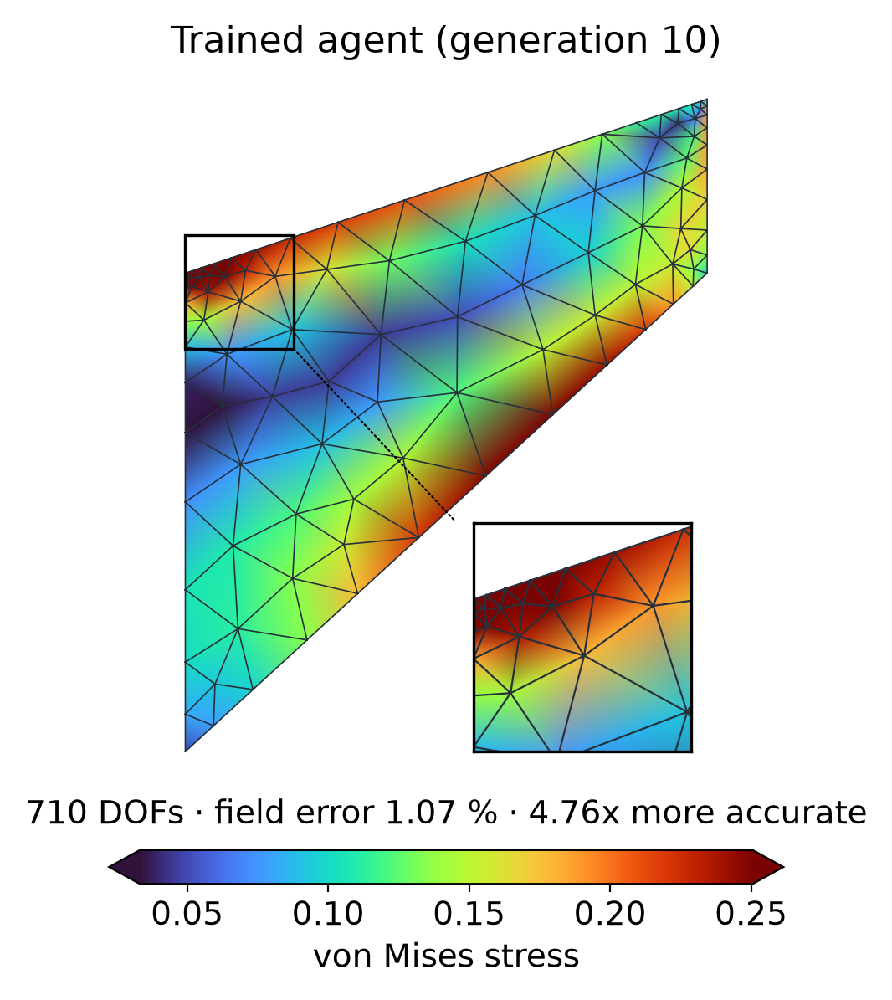
fig_A3_final.png / .pdfg10-cooks_membrane-a7 (ace_runs/deep1/gen10/runs/g10-cooks_membrane-a7.json): best run of the last generation by score (base score 1.126 = 4.50x the automesher; best of the whole run: g10-cooks_membrane-a7). 710 DOFs, 152 elements, field error 1.07 %, 4.76x the automesher's accuracy. Mesh request: {"h": 8.5, "order": 2, "refinements": [{"point": [0, 44], "size": 0.55, "radius": 11}, {"point": [48, 60], "size": 0.55, "radius": 9}, {"point": [48, 44], "size": 1.5, "radius": 6}, {"point": [0, 0], "size": 3, "radius": 4}, {"group": "loaded", "size": 3, "radius": 6.5}, {"point": [15, 28.5], "size": 4.2, "radius": 9.5}, {"point": [41.5, 50.5], "size": 3.6, "radius": 7}, {"point": [2.5, 32.5], "size": 3.5, "radius": 7}, {"point": [11, 16], "size": 3.8, "radius": 8.5}]}. Cook's membrane (plane stress, E = 1, nu = 1/3, unit total shear load; dimensionless stress), run ace_runs/deep1. Field error = relative energy-norm error of the whole stress field vs the fine reference (ace/field_refs/cooks_membrane.npz, 68,970 DOFs; a coarser reference solve differs from it by 0.39 %, so the reference's own error is below that). Each mesh was rebuilt from its request and re-solved with the fixed skfem solver as the scorer does; the re-solved field errors and DOFs match the stored ones (data/panels.json). No run was excluded: every Cook's membrane run's setup gives the same solution as the problem's own setup. Colours: von Mises at the element corner nodes (quadratic elements drawn by their corners, midside values not drawn, as the dashboard does), interpolated linearly across each element, Turbo scale clipped to the 1st-99th percentile of the reference (as in the agent dashboard), identical on every panel.
Cook's membrane, panel 4: the true solution
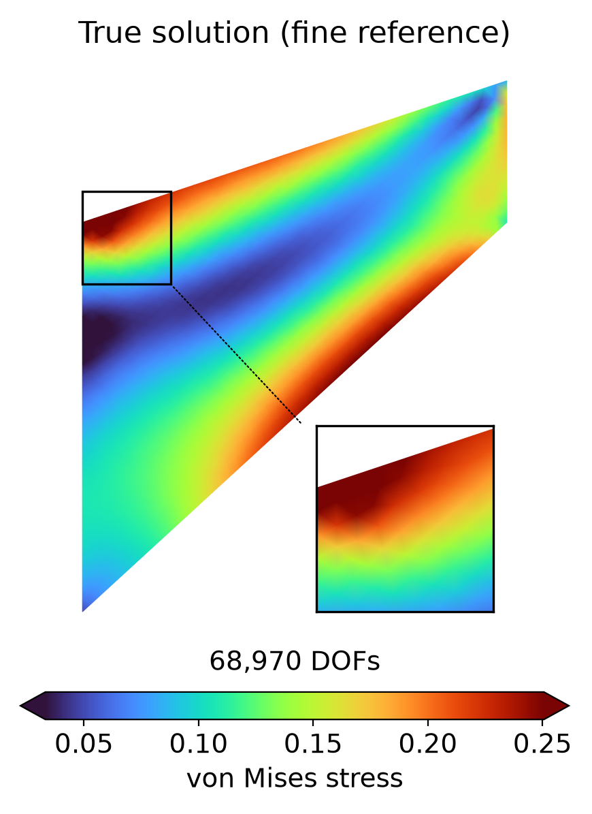
fig_A4_ref.png / .pdfThe fine reference solve (ace/field_refs/cooks_membrane.npz, 68,970 DOFs) drawn on the dashboard's target tessellation (ace/field_refs/cooks_membrane_target.msh, inverse-distance mean of the 4 nearest reference points, as ace/agent_dashboard.py target_structure). No mesh edges: this is the truth, not a mesh anyone submitted. Same Turbo scale as panels 1-3. Cook's membrane (plane stress, E = 1, nu = 1/3, unit total shear load; dimensionless stress), run ace_runs/deep1. Field error = relative energy-norm error of the whole stress field vs the fine reference (ace/field_refs/cooks_membrane.npz, 68,970 DOFs; a coarser reference solve differs from it by 0.39 %, so the reference's own error is below that). Each mesh was rebuilt from its request and re-solved with the fixed skfem solver as the scorer does; the re-solved field errors and DOFs match the stored ones (data/panels.json). No run was excluded: every Cook's membrane run's setup gives the same solution as the problem's own setup.
Cook's membrane: error maps
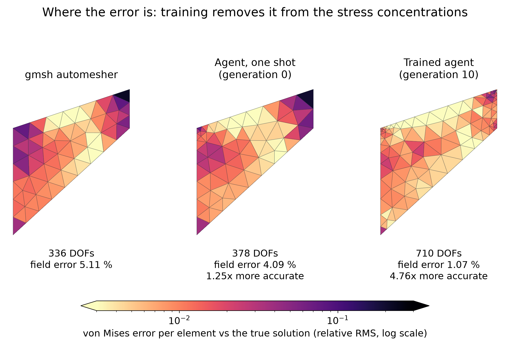
fig_A5_error_maps.png / .pdfPer element: RMS over the reference integration points inside it (12849 points in all) of the relative von Mises error |vm - vm_ref| / max(vm_ref, 0.2 median(vm_ref)) (the run report's pointwise error, ace/run_report.py _field). Log colour scale clipped to 0.003-0.3, identical on the three panels; mesh edges overlaid. Same meshes and numbers as the combined figure. Cook's membrane (plane stress, E = 1, nu = 1/3, unit total shear load; dimensionless stress), run ace_runs/deep1. Field error = relative energy-norm error of the whole stress field vs the fine reference (ace/field_refs/cooks_membrane.npz, 68,970 DOFs; a coarser reference solve differs from it by 0.39 %, so the reference's own error is below that). Each mesh was rebuilt from its request and re-solved with the fixed skfem solver as the scorer does; the re-solved field errors and DOFs match the stored ones (data/panels.json). No run was excluded: every Cook's membrane run's setup gives the same solution as the problem's own setup.
Cook's membrane: score vs generations trained
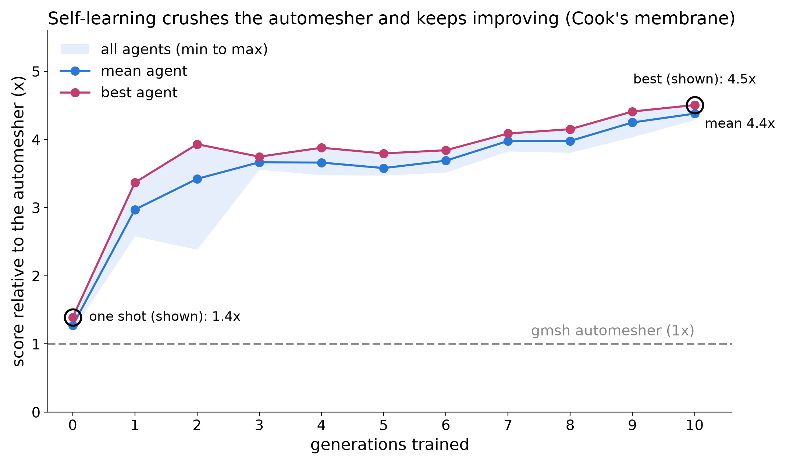
fig_B1_score_vs_generation.png / .pdfMetric: the scorer's base score (accuracy x efficiency, no bonuses; checks.base_score in ace_runs/deep1/gen*/runs/*cooks_membrane*.json) divided by the automesher's own score 0.25, so 1x = the automesher. It rewards accuracy and charges for DOFs. Best agent per generation (pink), mean of the agents per generation (blue), min-max band. Only correctly set-up runs are used (44 of 44): a run counts when its recorded setup, re-solved on its own mesh, gives the same field error (to 1e-6) as the problem's own setup (ace/checks.py reference_setup), so the differences shown are the mesh alone (data/runs_deep1.csv, column setup_ok). Generation 0: best 1.39x, mean 1.27x; generation 10: best 4.50x, mean 4.38x. Circled points are the runs drawn in the panels. Values: data/per_generation_cooks_membrane.csv.
Caveats: one training run (no repeats); 4 runs per generation; agents are reassigned between the two problems each generation. Chosen over the accuracy gain (fig_B2) as the headline because it is the quantity the agents were trained on and includes the DOF cost.
Cook's membrane: accuracy gain vs generations trained
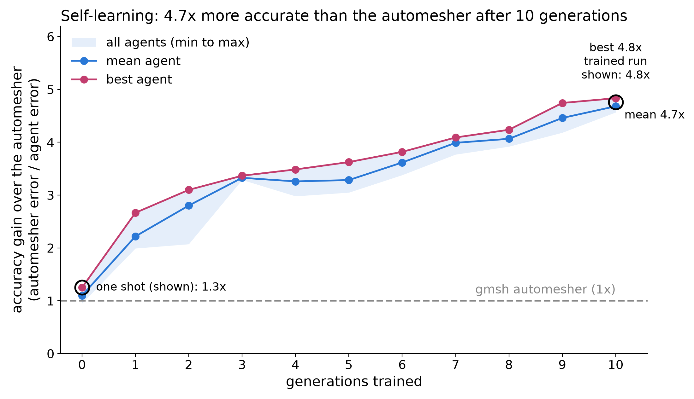
fig_B2_gain_vs_generation.png / .pdfMetric: gain = automesher error / agent error (checks.gain), ignoring DOFs. Generation 0: best 1.25x, mean 1.10x; generation 10: best 4.83x, mean 4.68x (title: the mean). Circled: the two runs drawn in the panels at their own gain (the generation-10 run shown, g10-cooks_membrane-a7, is the best by score, gain 4.76x; the best gain, 4.83x, is another run). Agents use ~2x the automesher's DOFs by the end (median 716 vs 336), so this overstates per-DOF efficiency; fig_B1 is the fair version. Only correctly set-up runs are used (44 of 44): a run counts when its recorded setup, re-solved on its own mesh, gives the same field error (to 1e-6) as the problem's own setup (ace/checks.py reference_setup), so the differences shown are the mesh alone (data/runs_deep1.csv, column setup_ok). Values: data/per_generation_cooks_membrane.csv.
Both 2D problems: score vs generations
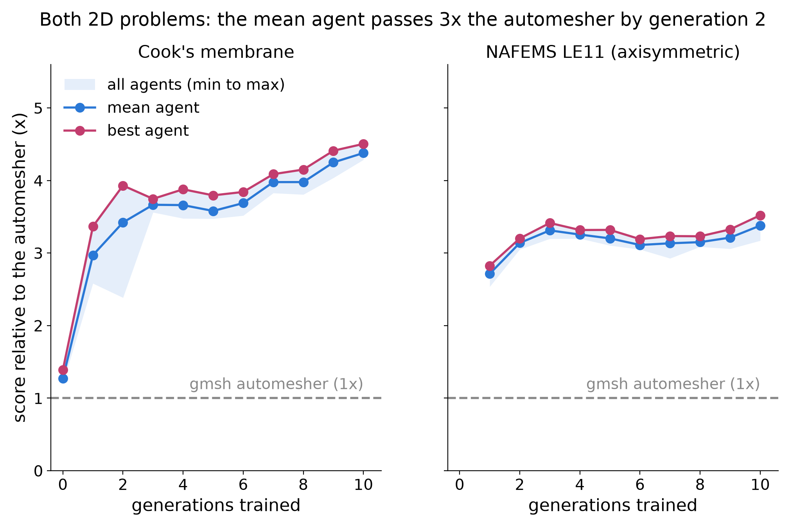
fig_B3_score_vs_generation_both.png / .pdfAs fig_B1 for Cook's membrane (left) and as fig_L6 for NAFEMS LE11 axisymmetric (right), same run ace_runs/deep1, correctly set-up runs only. Excluded: g0-nafems_le11_axisym-a0, g0-nafems_le11_axisym-a4, g0-nafems_le11_axisym-a5, g0-nafems_le11_axisym-a7 (generation 0), because they applied the temperature sqrt(x**2+y**2)+y instead of the problem's x + y, a setup mistake rather than meshing (field error 26.78 %-26.80 %). So the LE11 curve starts at generation 1. Mean agent at generation 2: Cook 3.42x, LE11 3.14x; generation 10: Cook best 4.50x, mean 4.38x; LE11 best 3.52x, mean 3.38x. Values: data/per_generation_cooks_membrane.csv, data/per_generation_nafems_le11_axisym.csv.